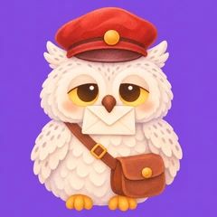
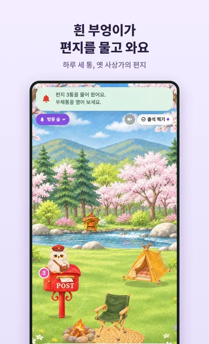
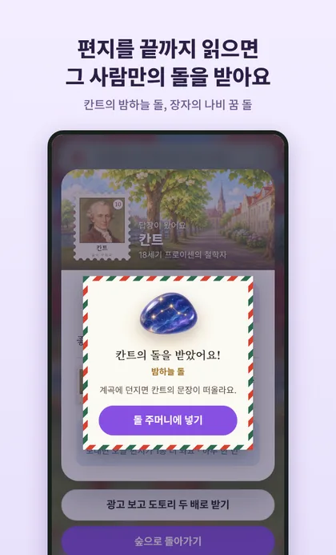
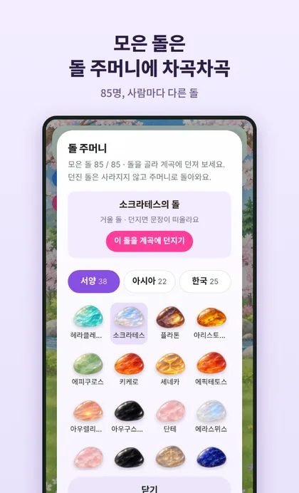
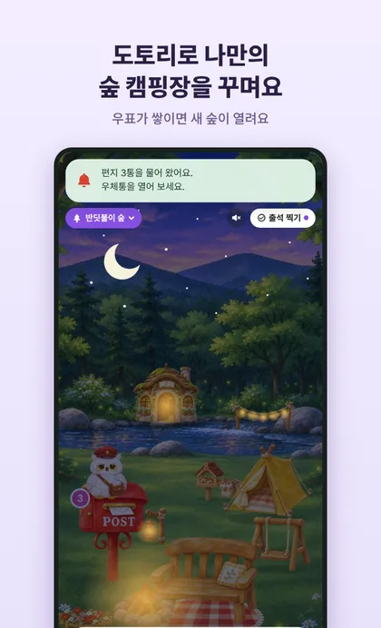

부엉이 우체부
인문학의 숲에서 받는 3통의 편지
숲속 캠핑장에 흰 부엉이 우체부가 하루 세 통의 편지를 물고 와요. 소크라테스, 공자, 세종, 버지니아 울프처럼 옛 사상가와 작가들이 보낸 편지를 의자에 앉아 읽어 보세요. 하루 3분, 쌓이는 인문학이에요.
토스에서 ‘부엉이 우체부’를 검색해 보세요




하루 세 통의 편지
편지마다 그 사람이 실제로 남긴 한 문장이 담겨 있어요. O/X로 내용을 확인하고 답장을 고르면 답장의 답장이 와요.
그 사람만의 돌
편지를 끝까지 읽으면 사람마다 다른 특별한 돌을 받아요. 계곡에 던지면 그 사람의 문장이 물 위에 떠올라요.
부엉이의 질문
매주 바뀌는 질문에 답하면 나와 닮은 인문학자를 찾아 드려요.
나만의 숲
우표가 쌓이면 새 숲이 열리고, 도토리로 의자와 캠핑 소품을 모아 나만의 자리를 꾸며요.